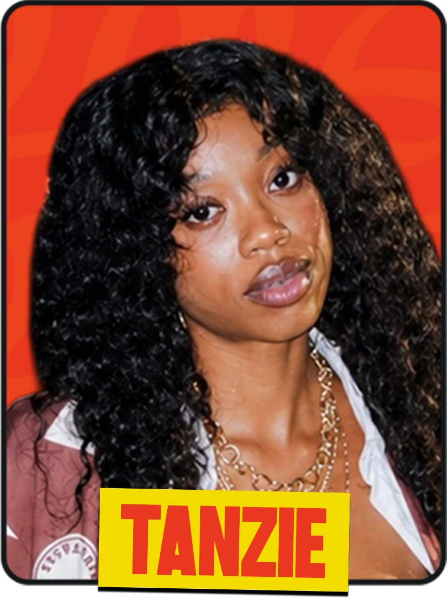
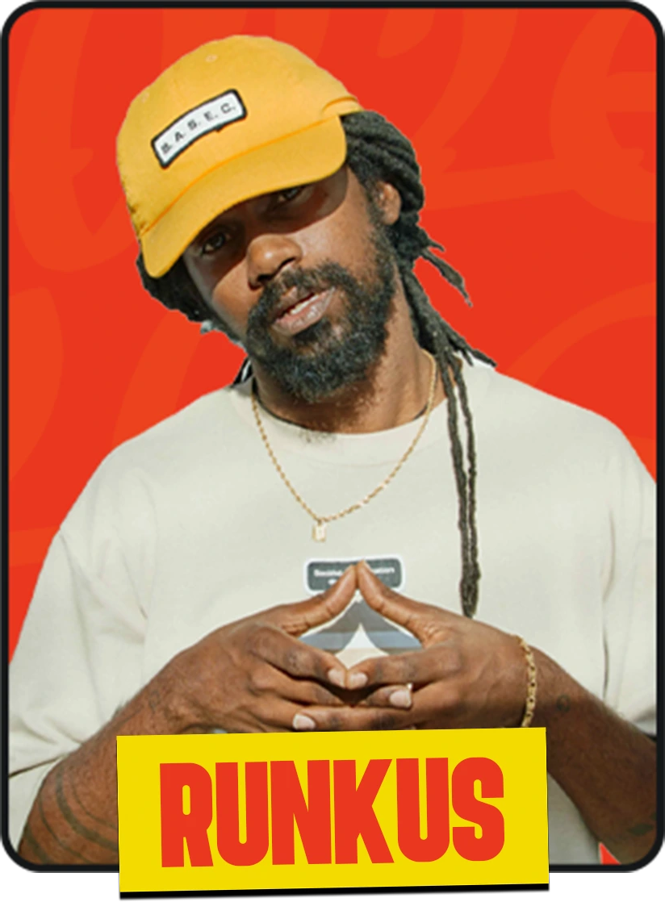
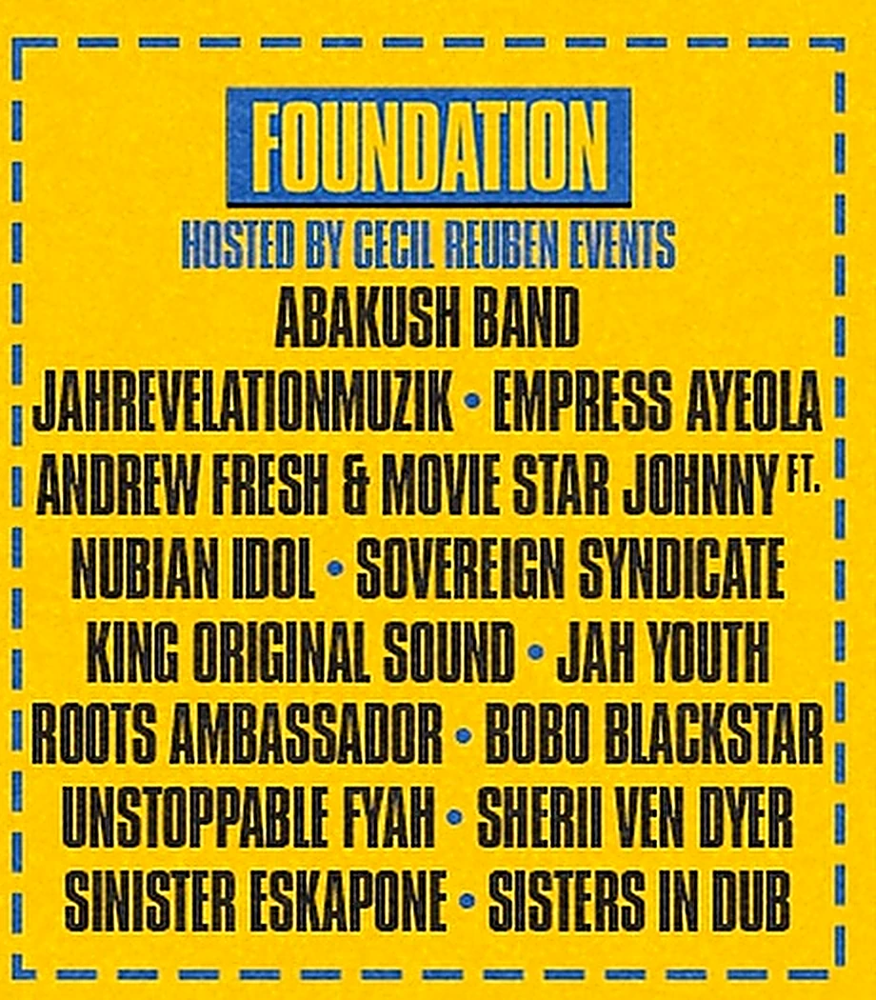
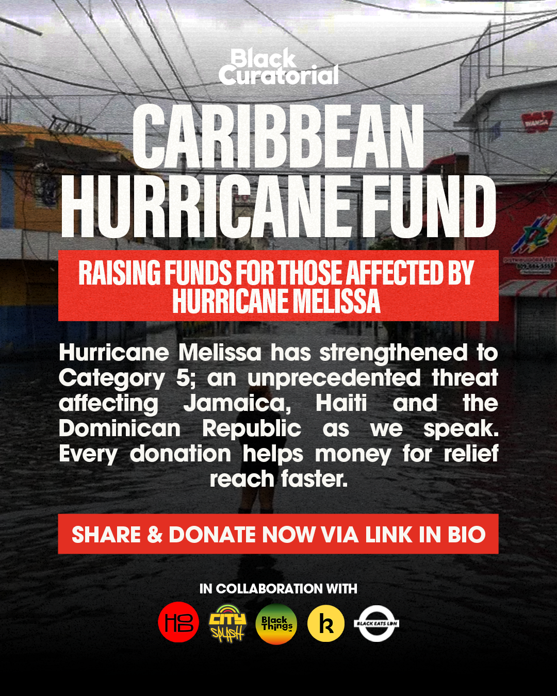

Giving back
City Splash Foundation
City Splash exists because of the community that built it. Alongside throwing the UK’s biggest one-day Caribbean and African celebration, we invest directly back into that community all year round — through artist development, grassroots grants, charity partnerships and emergency relief when it’s needed most. The City Splash Foundation brings all of that together in one place.
Our programmes
Where the investment goes
Talent development
Rise Up
Launched in 2021, City Splash has grown into the world’s largest one-day celebration of Caribbean and African music, food and culture. In 2024, we introduced Rise Up — a platform supporting outstanding emerging artists from the Caribbean.
2026 Cohort


Now entering its third year, Rise Up offers selected artists a one-week creative residency, taking place in both London and the Caribbean, that includes:
- A performance at City Splash Festival
- A songwriter camp with leading producers and musicians
- Media exposure, including interviews with radio and press
- Performance opportunities at key industry events like SXSW London
- Professional development workshops
- A wrap-up film capturing each artist’s journey on the programme
City Splash Week
Backing Black-owned business, one grant at a time
Every year, in the lead-up to City Splash, we host a week-long series of events and activations across London — panels, workshops, performances and more, mostly run independently by local partners. Our ourppls x City Splash Fund exists to help make more of that happen, offering four £500 grants to emerging Black-owned businesses and event curators.
- Four £500 grants awarded every year
- Funding goes towards producing an event or workshop during City Splash Week
- Open to organisers of all ages
- Priority given to those putting on their first event
City Splash isn’t responsible for these independently organised partner events, but we love backing new ideas.
See City Splash WeekCharitable partners
Standing with our community, year-round
Brixton Soup Kitchen
A Brixton charity providing food, drink and companionship to homeless and vulnerable people in the local community, five days a week. We support their work all year round, not just on festival day.
ACLT
An award-winning charity dedicated to donor matching and blood cancer support, working to grow the number of Black and mixed-heritage donors on the stem cell and blood registers.
On the ground
The Foundation Stage
Since City Splash began, one stage at the festival has always been handed over to renowned Brixton promoter Cecil Reuben. Hosted by Cecil Reuben Events, the Foundation Stage spotlights emerging, London-based reggae talent — from Abakush Band and Jahrevelationmuzik to Empress Ayeola, Sovereign Syndicate and Sisters In Dub — giving the city’s next generation a real shot at making it to the main stage.

In solidarity
Caribbean Hurricane Relief Fund
In the wake of Hurricane Melissa, City Splash joined Black Curatorial, House of Dread, Black Things UK, Kwanda and Black Eats to launch the Caribbean Hurricane Fund, raising money for relief efforts across Jamaica, Haiti and the Dominican Republic. So far we’ve raised over £13,000, with every contribution going directly to grassroots organisations and people on the ground.

Support the Hurricane Relief Fund